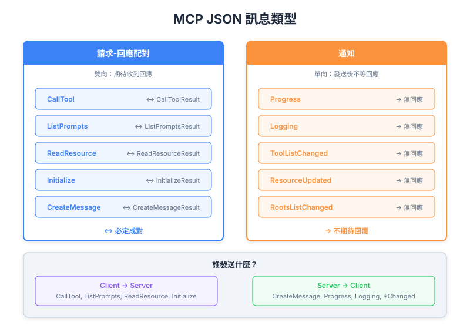

| Item | Detail |
|---|---|
| Exam Domain | D2 — Tool Design & MCP Integration (18%) |
| Task Statements | 2.4 (client-server communication patterns), 2.6 (MCP protocol specification) |
| Source | model-context-protocol-advanced-topics / 02-roots-and-messages / Lesson 10 |
所有 MCP 通信使用 JSON 消息，分为两类：Request-Result 配对（双向、期望响应）和 Notification（单向、fire-and-forget），形成 client 和 server 都能主动发起通信的双向协议。

MCP 中每个消息都属于两类之一：
| 类别 | 模式 | 期望响应？ | 示例 |
|---|---|---|---|
| Request-Result | 发送者送出 request，接收者返回 result | 是 | CallToolRequest/Result, ListPromptsRequest/Result |
| Notification | 发送者送出，结束 | 否 | ProgressNotification, LoggingNotification |
这个区别是根本性的 — 它决定了你如何设计错误处理、超时和消息排序。
Request 总是配对一个 Result 类型。发送者 block（或 await）直到 result 到达。
| Request | Result | 发起者 | 用途 |
|---|---|---|---|
CallToolRequest |
CallToolResult |
Client | 在 server 上执行 tool |
ListPromptsRequest |
ListPromptsResult |
Client | 发现可用 prompts |
ReadResourceRequest |
ReadResourceResult |
Client | 读取 server resource |
InitializeRequest |
InitializeResult |
Client | 建立连接、协商 capabilities |
CreateMessageRequest |
CreateMessageResult |
Server | Sampling — 请 client 调用 LLM |
ListRootsRequest |
ListRootsResult |
Server | 发现 client 的核准目录 |
// 示例：CallToolRequest
{
"jsonrpc": "2.0",
"id": 1,
"method": "tools/call",
"params": {
"name": "search_files",
"arguments": {
"query": "config.yaml"
}
}
}
// 示例：CallToolResult
{
"jsonrpc": "2.0",
"id": 1,
"result": {
"content": [
{
"type": "text",
"text": "Found config.yaml at /project/config.yaml"
}
]
}
}
注意 id 字段 — 它关联 request 和对应的 result（JSON-RPC 2.0 标准）。
Notification 是 fire-and-forget。没有 id 字段，不期望响应。
| Notification | 发送者 | 用途 |
|---|---|---|
ProgressNotification |
Server | 汇报 tool 执行进度 |
LoggingMessageNotification |
Server | 发送 log 消息给 client |
ToolListChangedNotification |
Server | 通知 client 可用 tools 已变更 |
ResourceUpdatedNotification |
Server | 通知 client resource 已修改 |
RootsListChangedNotification |
Client | 通知 server roots 已更新 |
// 示例：ProgressNotification（没有 "id" 字段）
{
"jsonrpc": "2.0",
"method": "notifications/progress",
"params": {
"progressToken": "task-123",
"progress": 75,
"total": 100
}
}
与 request 的关键差异：没有 id 字段 = notification。
MCP 是双向的 — 两端都能发起通信：
Client Server
| |
|-- InitializeRequest --------->| (Client 发起)
|<-- InitializeResult ----------|
| |
|-- CallToolRequest ----------->| (Client 发起)
|<-- ProgressNotification ------| (Server 推送)
|<-- LoggingNotification -------| (Server 推送)
|<-- CallToolResult ------------|
| |
|<-- CreateMessageRequest ------| (Server 发起 — sampling！)
|-- CreateMessageResult ------->|
| |
|-- RootsListChanged ---------->| (Client 推送 notification)
这不同于简单的 HTTP API（只有 client 发起）。MCP 中双方都是 peer。
MCP 规格在 GitHub 上以 TypeScript 撰写。重要背景：
// 来自规格 — 定义结构，非运行期代码
interface CallToolRequest {
method: "tools/call";
params: {
name: string;
arguments?: Record<string, unknown>;
};
}
理解哪端发送什么：
| Client 发送（给 Server） | Server 发送（给 Client） |
|---|---|
InitializeRequest |
InitializeResult |
CallToolRequest |
CallToolResult |
ListPromptsRequest |
ListPromptsResult |
ReadResourceRequest |
ReadResourceResult |
RootsListChangedNotification |
ProgressNotification |
CreateMessageResult（响应） |
CreateMessageRequest（sampling） |
LoggingMessageNotification |
|
ToolListChangedNotification |
理解消息类型对选择正确 transport 至关重要：
| Transport | 支持双向？ | 支持 Notification？ |
|---|---|---|
| stdio | 是（stdin/stdout） | 是 |
| SSE | 是（HTTP POST + SSE stream） | 是 |
| Streamable HTTP | 是 | 是 |
所有 MCP transport 都必须支持双向通信，因为协议本质就是双向的。
Key Insight
MCP 不是 REST API。它是在 transport 层之上的 peer-to-peer 协议。Client 和 server 都可以发送 request 和 notification。理解这个双向本质对设计稳健的 MCP 集成至关重要 — 你必须处理两个方向的传入消息。
id，期望响应）和 Notification（无 id，fire-and-forget）| Front | Back |
|---|---|
| MCP 消息分为哪两类？ | Request-Result 配对（双向、期望响应）和 Notification（单向、fire-and-forget） |
| JSON 中如何区分 Request 和 Notification？ | Request 有 id 字段；Notification 没有 |
| MCP 是单向还是双向？ | 双向 — client 和 server 都能发起 request 和 notification |
| MCP 规格用什么语言撰写？ | TypeScript — 用于类型描述，非执行 |
| 举一个 server 发起 request 的例子？ | CreateMessageRequest（sampling）— server 请 client 调用 LLM |
| Server 的 tool 清单变更时发送什么 notification？ | ToolListChangedNotification |
| MCP 使用哪个 JSON-RPC 版本？ | JSON-RPC 2.0 |
| 为什么 MCP transport 必须支持双向通信？ | 因为 client 和 server 都能发起 request（如 client 调用 tool，server 请求 sampling） |